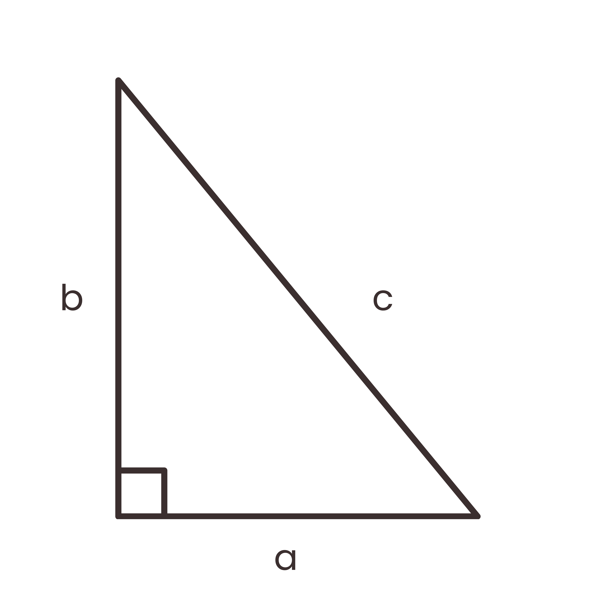

Kalkulator ini membantu kamu menghitung sisi ketiga segitiga siku-siku menggunakan Teorema Pythagoras. Masukkan nilai dua sisi, lalu tekan tombol Hitung.
Teorema Pythagoras menyatakan bahwa dalam segitiga siku-siku, kuadrat sisi miring (hipotenusa) sama dengan jumlah kuadrat dari dua sisi lainnya.
Rumus: $c^2 = a^2 + b^2$, dimana $c$ adalah sisi miring, dan $a, b$ adalah sisi siku-siku.
Kalkulator ini bisa menemukan sisi $a$, $b$, atau $c$ jika dua sisi lainnya diketahui.
Visualisasi input sisi A, B, dan C.